We have created a set of R functions that allow you to add the Z axis to a pass play. Additionally, we have created functions to easily plot the NGS-highlight data.
Before you can run the code, you need to install a few required libraries:
Then, we can load the libraries through the source:
source("https://raw.githubusercontent.com/dutta/NFL3D/master/animate_play.R")
The following functions are the ones necessary to see the results:
three_d_animate()
three_d_animate_static()
get_all_arcs_for_passer()
three_d_all_passes()
Currently, NFL publicly available tracking data is presented entirely in 2 dimensions. The x axis (usually 0-120) represents a position between the end zones in yards, and the y axis (usually 0-54) represents a position between the sidelines in yards. We have the position of players on the field throughout the duration of a play. Some animations that are created from such data look like this:
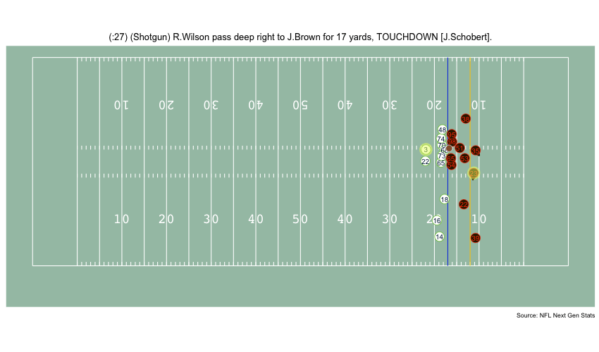
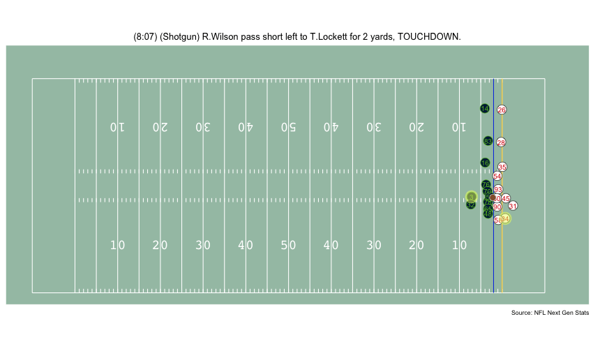
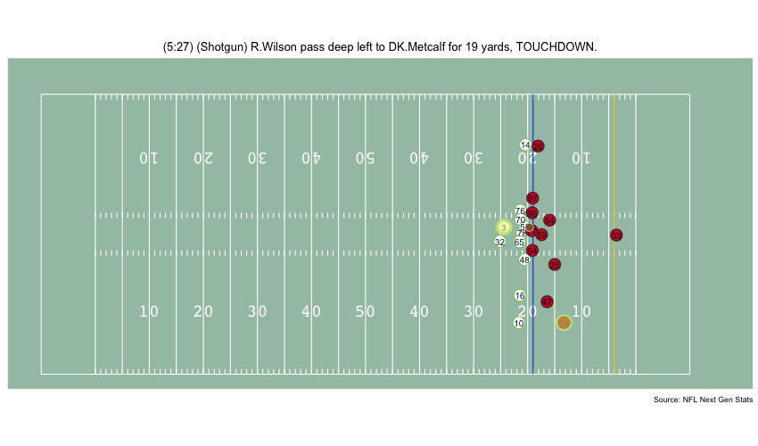
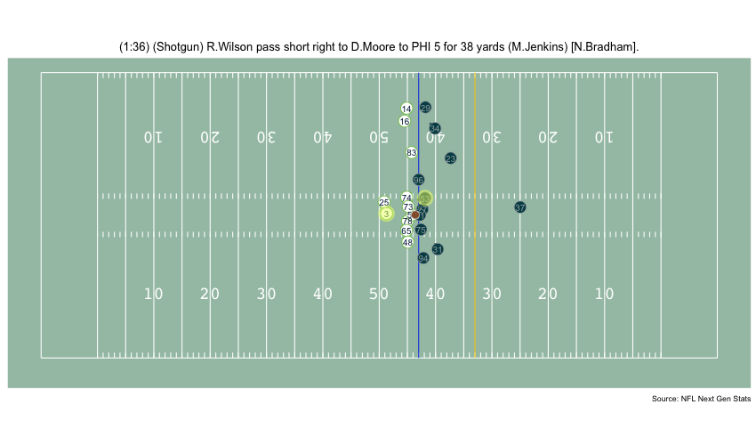
While informative, we lose some of the nuance of a throw. For example, the play in the bottom left corner above shows a pass to a player who was covered tightly by the defender. What we do not see was the arc of the throw that allowed the pass to avoid the outstretched hands of the defender and drop into the receivers' arms. Similarly, in the top left panel, we see a throw that appears to pass through 3 defenders. What we are unable to see is a perfectly thrown looped pass that was thrown with an arc that would allow the ball to pass over the 3 defenders and exactly into the arms of the receiver but still allowing the catcher to remain in-bounds.
Some quarterbacks are better at using the flight of the ball to beat defenders, and we attempt to quantify and understand this by using the 2D data to interpolate the z axis of the position of the ball. In doing so, we can calculate the angle of launch and the true velocity of launch through which we can compare different quarterbacks and their use of flight.
Since we currently only have the x,y coordinates of the position of the ball, we will use kinematic equations to interpolate the z-axis. In order to apply the kinematics equations we must first make some assumptions:
- Since we are looking for comparative relationship between quarterbacks, we will assume
no air resistance for this first version of NFL3D- Since quarterbacks can release the ball at different points, and we don't have any information about the release point, we will make an assumption that the ball is
released and received at 6ft(in future releases this will be variable). Additionally, we will assume the pass is not tipped or disturbed significantly enough to alter the parabola. The ball goes from the QB's hand to the catcher's hand with nothing in between.
- The NGS-highlights dataset only has completions and interceptions, and thus we choose to make the arrival point 6ft (2 yards) in the air. With more data, we would treat incompletions differently, we would set the arrival point to
z = 0- With no
air resistancethe only forces on the ball will be the horizontal gravity force
There are some other forces on the ball. The ball is rotating and there is a drag force from the air resistance. However, these are both hard to account for since the ball isn't always thrown in a spiral and thus understanding the surface area of the ball that is presented is rather complex. Timothy Gay in his book The Physics of Football discusses all 12 axes of forces on the ball, and Watts and Moore in their paper The Drag Force on an American Football consider the drag force of a standard football1,2. Since we are looking for relative results, we will ignore the rotation and air resistance for this edition of the problem. With the assumptions above, we can begin formulating the problem. Consider the following three figures.
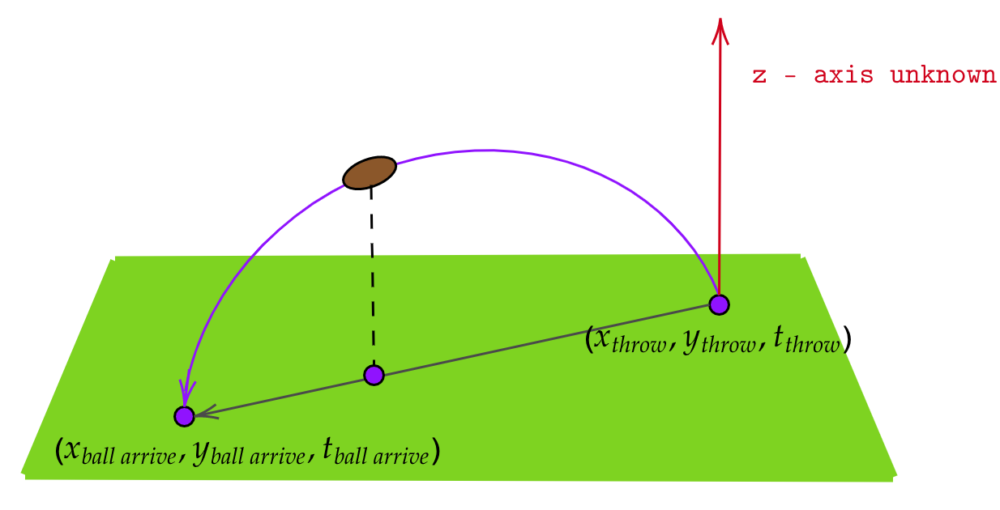
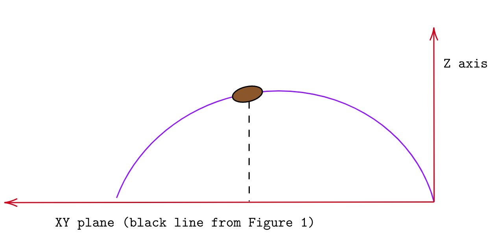
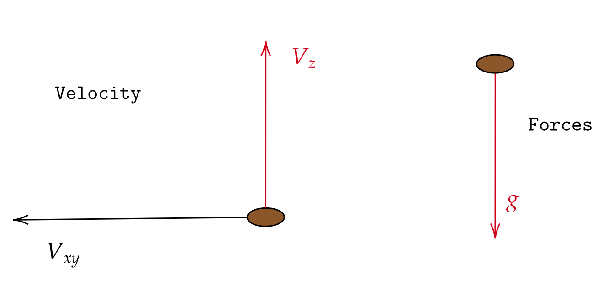
From 2D tracking data, the information about the position of the ball is just the launch position and the arrival position. Using assumption 2, the launch position (all units in yards) is: (xthrow,ythrow,2) and the throw happens at time tthrow. Symmetrically, the arrival position is just (xball arrive,yball arrive,2) and happens at time tball arrive. Figure 1 encapsulates the construction of this problem.
Now consider the second figure. In this figure, we have sliced along the black line in figure 1. This gives us the flight of the ball through the air as a parabola (from assumption 1 and 3 the only force acting on the ball is gravity). We know the coordinates of the ball at time tthrow is (xthrow,ythrow,2) and at time tball arrive is (xball arrive,yball arrive,2). From projectile motion, we know that the horizontal component and the vertical component are independent with regards to speed. Since we know the x and y coordinates of the ball at specific times, we can calculate the velocity along the ground Vxy:
Equation 1: Given thetthrowandtball arrivepoints of the ball,(xthrow,ythrow,2)and(xball arrive,yball arrive,2)\[V_{xy} = {\sqrt{(x_{ball arrive} - x_{throw})^2 + (y_{ball arrive} - y_{throw})^2} \over {(t_{ball arrive} - t_{throw})}}\]
Upon release, the ball has velocities in the directions as described by the third figure. Our goal is to find the z value at any given timestamp during the duration of the throw. Since we know how long the ball is in the air, we can apply the following equation for the position of the ball:
Equation 2: \[\Delta z = V_{z} t - {1 \over 2}gt^2\] Where \(\Delta z\) is the displacement from the initialzposition and \(V_{z}\) is the initial velocity in thezdirection.
From assumption 2 we see that the arrival position and the throw position are the same with respect to the z axis. Thus we can set this value to 0. Then we can rearrange the equation to calculate the velocity in the z, V0z:
Equation 3: \[V_{z} = {tg \over 2}\]
Now that we have the velocity in the z direction, we can use the final kinematics equation to find the z value at any time ts:
Equation 4: \[z = z_0 + V_{z} t - {1 \over 2} gt_s^2\] More specifically in this case, since we know the initial \(z\) position: \[z = 2 + V_{z} t - {1 \over 2} gt_s^2\]
Finally, since we have equations for Vxy, Vz we can also calculate the launch velocity and launch angle using the following equations using the velocity relationship in figure 3:
Equation 5a: Initial Launch Velocity \[V = \sqrt {V_{z}^2 + V_{xy}^2} \]
Equation 5b: Initial Launch Angle \[\theta = \tan^{-1}({V_z \over V_{xy}}) \]
Let us take a look back at the plays in the introduction. With the added z axis we can see the arc of the throws:
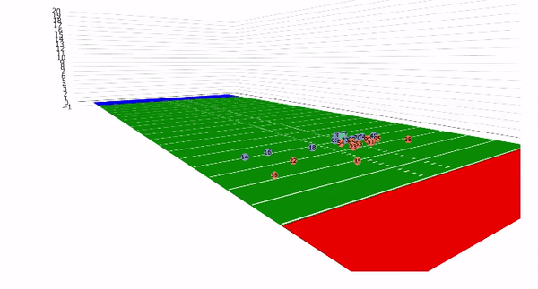
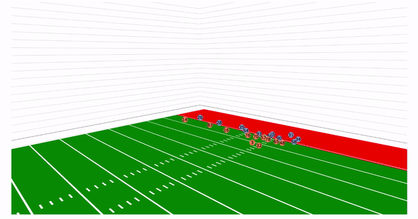
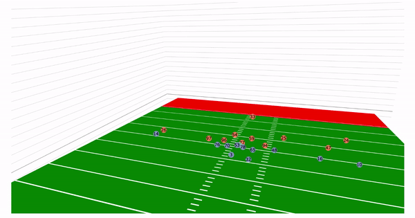
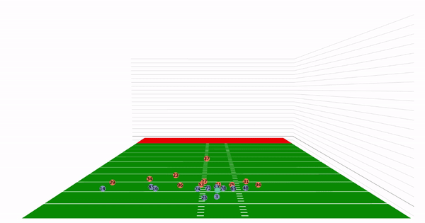
We would like to emphasize that the dataset used was the NGS-highlight dataset and thus is highly skewed. Since these are highlight plays, many of these examples are deep passes, interceptions, and touchdowns. There are only a few passes that actually represent "the average" pass a quarterback would make.
We can see how many of these passes have large arcs in their passes in order to account for different defenses. Now let us look at the different launch velocities and throwing angles for different quarterbacks.
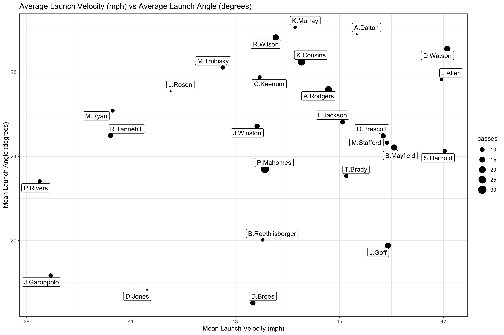
We can see on average that Russell Wilson, who is the passer in all of the examples above, has a much higher launch angle than Patrick Mahomes and Drew Brees, and all three of them have similar average velocities. On the other hand we see that Jimmy Garoppolo has a relatively small launch angle and launch velocity on average. Josh Allen, vaunted for his arm strength, is among the top quarterbacks in terms of launch angle and velocity, further vindicating such praise. Now let us look at the max velocity by quarterbacks who have more than 5 highlight plays:
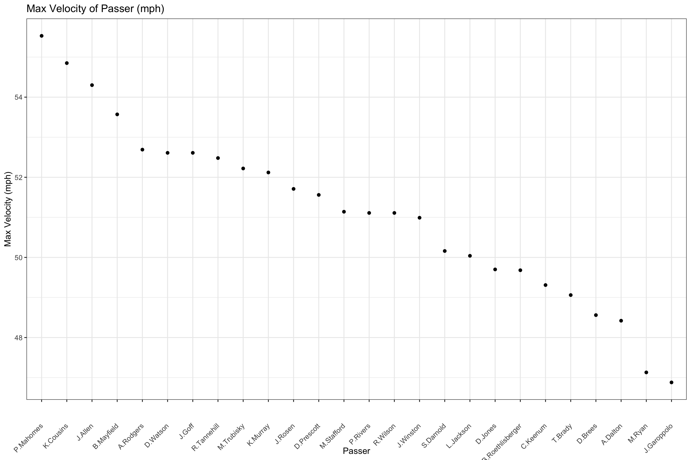
Patrick Mahomes far and away has the fastest pass in the NGS-highlight dataset. Josh Allen also has a pass in the top few of quarterbacks. Russell Wilson's fastest pass is toward the middle of the pack. Hence, let us look at the distribution of launch angle and launch velocity:
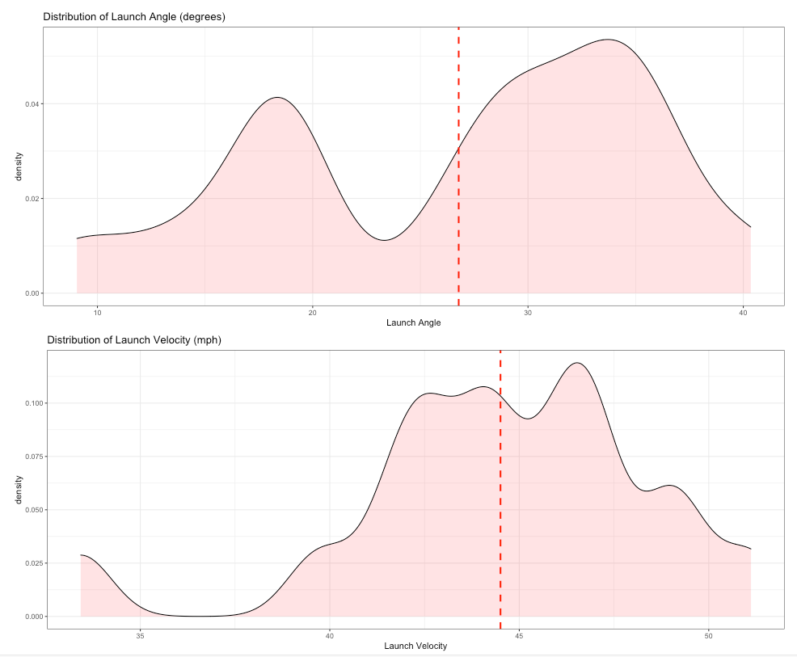
We can see from the distribution that Russell Wilson generally has passes with a launch angle above 30 degrees. Further, we see that his launch velocity is very close to a standard normal around 44-45 mph. Now let us compare Wilson with the 11 other top QBs in terms of the distributions of launch angle and velocity.
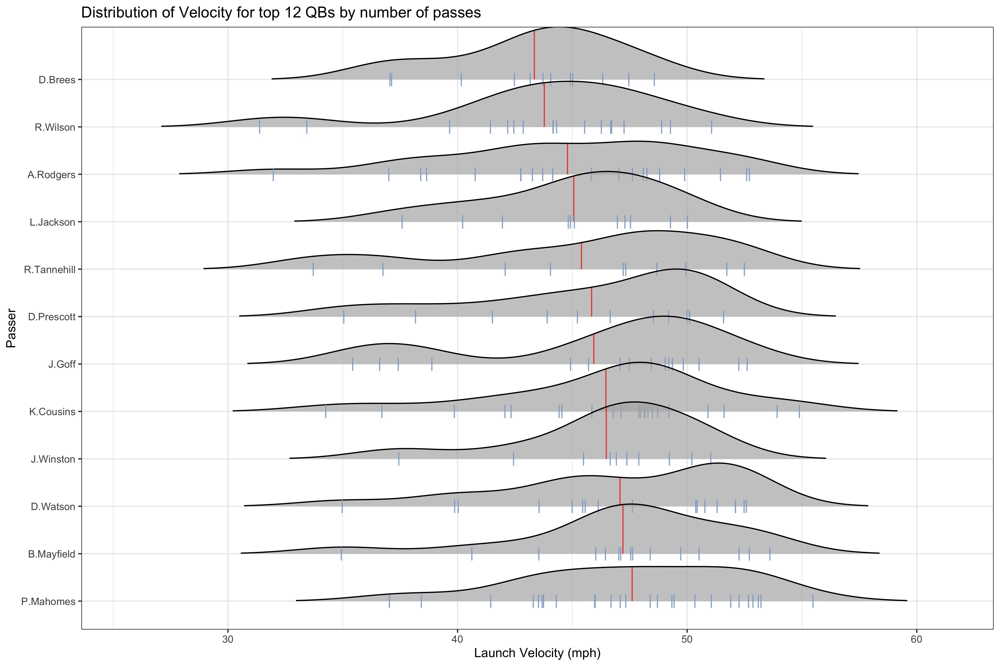
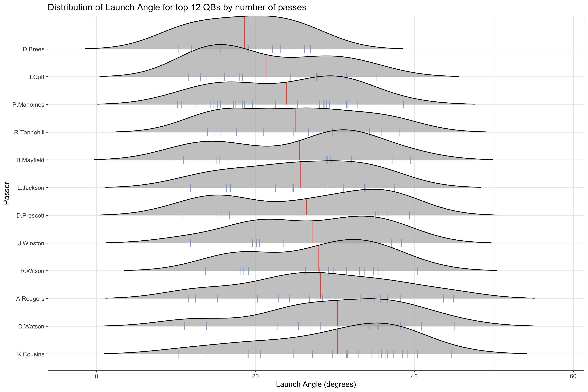
These are just some of the examples of the analysis that can be done with these added values.
The work we have presented here allows us to add the z axis to standard 2D tracking data. In doing this work, we are able to extract the ball position, launch angle, and launch velocity. Since the dataset is skewed and rather small, the scope of the work done here is limited. However, this work shows promise and with a larger dataset we would be able to perform more complex analysis.
For example, given a larger dataset, we could extend the problem to look at players who are more capable of throwing high velocity passes. For instance, are players who throw a higher average velocity able to complete passes with a lower probability of completion? Or does the force necessary to throw the pass inherently make the pass less accurate? We can ask the same questions about launch angle. Do the players who throw at a lower launch angle e.g. Jimmy Garoppolo complete more difficult passes or do the players who throw at a higher angle e.g. Russell Wilson or Kyler Murray complete the more difficult passes. Obviously we are unable to perform this analysis because our data does not contain any true incompletions, but with a standard season worth of data we would be able to understand how launch angle and velocity impact completions.
Another analysis that could be performed would be how well WRs or DBs track the ball in the air depending on the arc of the ball or the speed of the pass. We could start to see how players have to slow down or speed up in reaction to the pass. This could be compounded with how different quarterbacks throw into different defensive types. Does man coverage mean QBs have to throw with a higher arc or do certain zone coverages induce a smaller arc with a higher pass? We can start to see how quarterbacks adapt to different pass defenses with their throws, and try and understand how defenses can better approach different quarterback throwing styles.
With additional data we would be able to start to tackle some of these more complicated questions.
1 The Physics of Football — Timothy Gay
2 The drag force on an American Football — Robert G. Watts and Gary Moore http://users.df.uba.ar/sgil/physics_paper_doc/papers_phys/fluids/drag_football.pdf